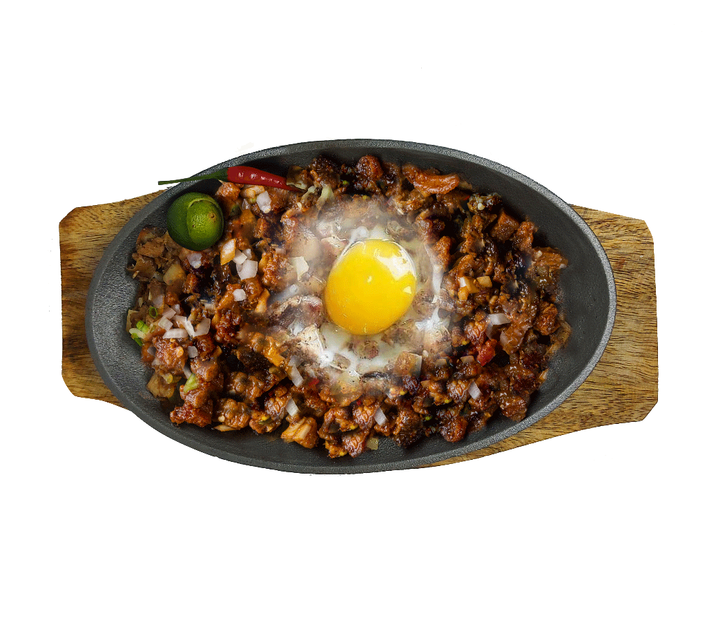

|
Crispy Pata is a Filipino crispy pork knuckle dish that is
boiled first and then deep-fried until golden and crisp. |
₱550 |
Main Dish |
|
Inihaw na Liempo is a popular Filipino grilled pork belly
dish, marinated in a flavorful mixture of soy sauce, vinegar,
garlic, and other spices, and then grilled to perfection. |
₱220 |
Main Dish |
|  |
Pork Sisig is a popular Filipino dish made with chopped pork
belly, onions, and chili peppers. Served sizzling hot with a
raw egg on top. |
₱350 |
Main Dish |
|
Sizzling Hotdog is a dish made with grilled hotdogs, served
on a sizzling plate and topped with sautéed onions and bell
peppers, usually served as an appetizer or main course. |
₱185 |
Main Dish |
|
Lechon Kawali is a Filipino dish made with deep-fried pork
belly, usually marinated in a mixture of soy sauce, vinegar,
garlic, and other spices, resulting in a crispy and flavorful
dish, often served as a main course. |
₱350 |
Main Dish |
|
Sizzling Pusit is a Filipino dish made with grilled or fried
squid, served on a sizzling plate and topped with sautéed
onions and bell peppers, usually served as an appetizer or main
course. |
₱250 |
Main Dish |